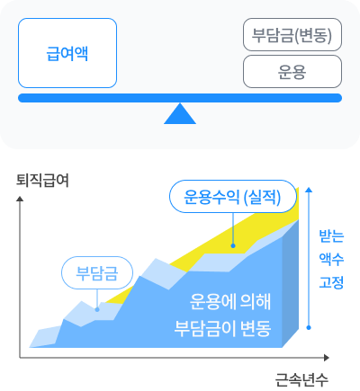
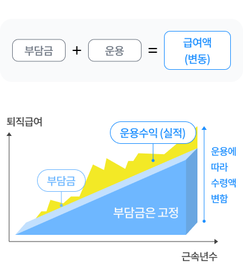

퇴직연금제도 안내
퇴직연금제도의 특징
기업이 사내에 적립하던 퇴직금제도를 대체하여, 금융기관에 매년 퇴직금 해당금액을 적립해서 근로자가 퇴직할 때 연금 또는 일시금으로 지급받아 노후설계가 가능하도록 한 제도이다.
-
사업장이 도산해도 수급권 보장
퇴직연금제도에서는 믿을 만한 금융기관을 선정하여 퇴직금을 맡겨 놓기 때문에 사업장이 도산해도 수급권이 보장됩니다.
-
제도설계 및 운용과정의 다양한 선택권 부여
퇴직급여를 퇴직금제도에서 처럼 일시금으로 수령할 수도 있고, 조건이 충족되면 연금으로 수령할 수도 있습니다. 특히 DC형의 경우에는 근로자의 추가 부담금 납부가 가능하고 이에 대한 별도의 소득공제 혜택도 주어집니다.
-
변화된 자산관리 환경에 대응
퇴직연금제도는 채권, 주식, 선물, 각종 파생상품 등 다양한 금융상품에 장기 분산 투자함으로써 자산관리 환경의 변화에 효과적으로 대응할 수 있습니다.
-
은퇴시까지 충분한 수준의 노후재원 보존
퇴직연금제도에서는 중도인출(중간정산)요건을 엄격하게 제한하여 노후 재원인 퇴직급여가 생활자금으로 소진되지 않도록 하고 있습니다.
출처 : 금융감독원 퇴직연금 종합안내(pension.fss.or.kr), 국민연금 CSA 전문상담사과정
퇴직연금제도의 종류
1. DB (Defined Benefit : 확정급여형 퇴직연금)
근로자의 근속기간 및 급여수준에 따라 퇴직금이 사전에 결정되는 제도.
DB형 제도는 근로자가 퇴직 시 받을 수 있는 퇴직금이 ‘계산식’에 의해 정해져 있고 기업이 퇴직 자산을 운용하므로 그 수익과 운용의 책임이 기업의 몫이 된다.
1확정급여형(DB : Define Benefit)
- 퇴직 시 근로자가 받을 퇴직급여가 사전에 확정
- 사용자가 부담할 금액은 적립금 운용 결과에 따라 변동 가능
- 연금계리방식을 통해 산출된 부담그을 매년 정기적으로 납입(의무적립수준 : 계속/비계속 기준의 60% 이상)
- 적립금 운영결과 책임을 기업이 부담
- 적립금 운용성과에 따라 부담금 감소 또는 증가
- 기업은 다양한 운용방법 중1개 이상을 선택 또는 변경하면서 적립금 운용
- 사전에 정해진 퇴직급여를 근로자에게 지급
- 일시금과 연금 중 근로자가 선택하여 수정
- 법에 정한 사유 충족 시 담보대출 가능
2. DC (Defined Contribution : 확정기여형 퇴직연금)
기업이 부담할 부담금이 사전에 확정되는 제도.
노사합의에 따라 정한대로 ‘정해진 부담금＇을 퇴직연금 사업자에게 납입하고 근로자가 그 부담금을 직접 운용하기 때문에 본인의 운용실적에 따라 퇴직금이 달라질 수 있는 제도.
1확정기여형(DC : Defined Contribution) 제도
- 사용자가 부담해야 할 부담금을 사전에 정하여 근로자 개인별 계좌에 적립
- 근로자가 받을 퇴직급여는 적립금 운용실적에 따라 변동
- 연간 임금총액의 1/12이상 납입
- 기업이 개인별 계좌에 정기적으로 납입
- 근로자 추가닙입 가능
- 위험과 수익구조가 다른 3개 이상의 상품 중 선택 (원리금보장형 반드시 포함)
- 매반기 1회 이상 운용방법 변경 가능
- 일시금과 연금 중 근로자 선택하여 수령
- 법에 정한 사유 충족 시 중도인출/담보대출 가능
확정급여형과 확정기여형 퇴직연금의 비교
| 확정급여형(DB) | 확정기여형(DC) | |
|---|---|---|
|
확정급여형퇴직연금제도 : 규약에서 급여액을 정하는 제도

|
확정기여형퇴직연금제도 : 규약에서 기여액을 정하는 제도

|
|
| 기업부담금 |
|
|
| 적립금 운용 |
|
|
| 이직 시 퇴직연금 이전 |
|
|
| 퇴직급여 형태 및 금액 |
|
|
| 급여수준 |
|
|
| 연금계리 |
|
|
| 긴급자금 필요 시 |
|
|
| 적합한 기업/근로자 |
|
|
IRA (Individual Retirement Account, 개인퇴직계좌)
개인퇴직계좌(IRA: Individual Retirement Account)"란 근로자가 퇴직 또는 직장을 옮길 때 받은 퇴직금(퇴직 일시금)을 은퇴시점까지 적립할 수 있는 계좌로 근로자가 직장을 옮기는 경우에도 퇴직급여를 인출하지 않고 세금혜택을 받으며 계속 적립하여 운용할 수 있습니다. 퇴직일시금을 받은 근로자가 원하면 가입할 수 있으며 적립금을 연금 또는 일시금으로 받을 때까지 과세를 유예 받으면서 운용할 수 있습니다.(적립금 운용과 관련한 사항은 확정기여형 퇴직연금제도를 준용)
출처 : 금융감독원 퇴직연금 종합안내(pension.fss.or.kr), 국민연금 CSA 전문상담사과정
적립금 운용
퇴직연금 관련법규에서는 근로자 및 사용자가 퇴직연금을 장기적으로 안정적이고 용이하게 운용 및 관리할 수 있도록 적립금 운용방법의 범위를 한정하고, 이 중 위험한 운용방법에 대해서는 투자 한도를 설정하고 있습니다.
선택한 퇴직연금 제도에 따라 DB형에서는 기업, DC형에서는 근로자가 다양한 금융상품 중 1개 이상을 선택ㆍ변경하면서 적립금을 운용하게 됩니다.
퇴직연금은 장기적인 관점에서 안정적으로 운용하되, 투자경험과 투자성향에 따라 자산운용전략 수립과 일관성이 필요하며 적절한 분산투자를 통해 위험을 분산하는 것이 중요합니다.
1. 적립금 운용의 특징
장기적, 안정적, 노후생활안정 도모
2. 자산관리 계약
신탁계약, 보험계약
3. 적립금 운용 방법
1원리금 보장형
이자율이 사전에 공시되고 원금과 이자가 보장되어 안정적인 투자수익을 달성할 수 있는 상품
2실적 배당형
본인이 낸 운용 실적에 따라 이익과 손실이 결정되는 상품으로 주식이나 채권, 혹은 다양한 펀드들에 투자할 수 있으며, 투자성향과 목표수익률, 위험에 대한 태도 등에 따라 채권형, 주식형, 혼합형 등 다양한 펀드를 선택 가능
| 구분 | 은행 | 보험 | 증권사 | 자산운용사 |
|---|---|---|---|---|
| 원리금 보장형 | 예적금 | 금리연동형 이율보증형 |
국공채 | 국공채 |
| 실적배당형 | 특정금전신탁 | 채권형, 주식형, 혼합형 | 기타 유가증권 | 간접 투자증권 |
4. 위험자산 투자제한
1DB제도에서의 위험자산에 대한 법적 투자한도
| 구분 | 자산운용사 |
|---|---|
| 국내외 상장 주식전환사채, 후순위채권, 외국 투자적격채권 등 | 30% |
| 주식형 펀드(주식편입비율 60% 이상), 파생펀드, 부동산펀드, 실물펀드 등 | 50% |
| 혼합형 펀드(주식편입비율 0~60% 이상), 고위험 채권 투자 펀드 등 | 70% |
| 총 투자한도 | 70% |
2DC제도에서의 위험자산에 대한 법적 투자한도
| 구분 | 자산운용사 |
|---|---|
|
주식직접투자, 주식형편드(주식편입 비율 60% 이상), 혼합형펀드(주식편입 비율 40~60%) *주식편입 비율이 40% 미만인 상품에만 투자 가능 |
투자금지 |
출처 : 금융감독원 퇴직연금 종합안내(pension.fss.or.kr), 국민연금 CSA 전문상담사과정